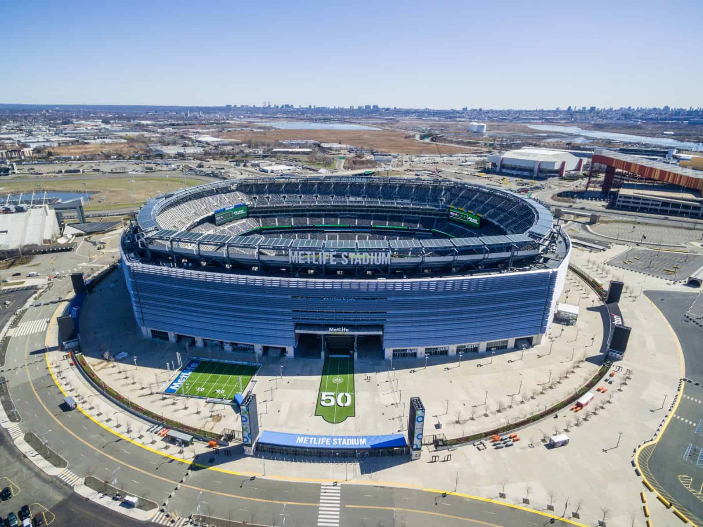

Estádio de Nova York e Nova Jersey sediará a final da maior Copa do Mundo da FIFA™ de todos os tempos
Data da Final:
O MetLife Stadium foi o escolhido para receber o evento global que parará o planeta. Com capacidade para mais de 82.000 espetadores, o recinto em East Rutherford será o epicentro do futebol mundial.

Esta edição será histórica, não apenas pelo local da final, mas por ser a primeira com 48 seleções divididas entre três países sedes: Canadá, México e Estados Unidos.